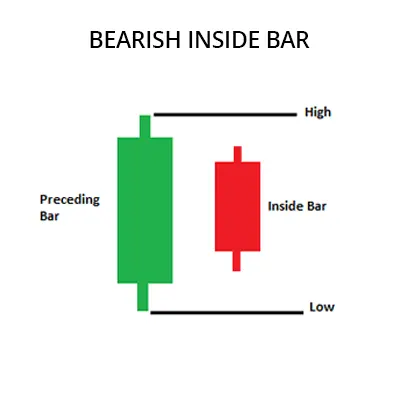
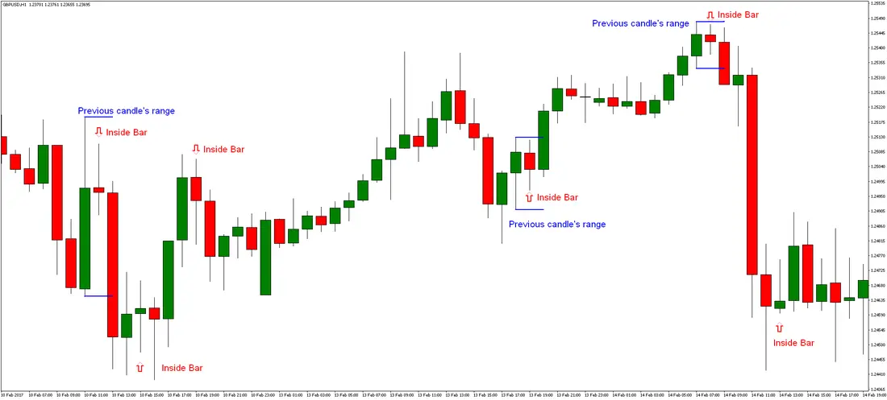

बियरिश इनसाइड बार पैटर्न एक ट्रेडिंग पैटर्न है जो बाजार की ऊपर की दिशा का अंत सूचित करता है और नीचे की
दिशा का संकेत देता है। यह पैटर्न दो कैंडलस्टिक से बना होता है। पहला कैंडलस्टिक एक ऊपर का होता है,
और दूसरा कैंडलस्टिक एक नीचे का होता है जो पहले कैंडलस्टिक के शरीर को पूरी तरह से नहीं समाहित
करता है और पहले कैंडलस्टिक की खुलने और बंद होने की कीमत के भीतर बसता है।
